Ph.D. Student · Wildlife Biology & Management
Mapping what wildlife eats, from forest plot to satellite.
Kasetsart University · Mahidol University
- Papers
- 9
- Citations
- 35
- h-index
- 4
I'm Andaman Chankhao, a Ph.D. student in Forestry at Kasetsart University and an Assistant Lecturer at Mahidol University. I study forage, the plants large herbivores depend on, in Thailand's seasonally dry forests, combining permanent field plots with satellite remote sensing.

Kasetsart University · Mahidol University
- Peer-reviewed papers
- 9
- Citations
- 35
- h-index
- 4
- Research projects since 2016
- 7
Citation metrics: OpenAlex
01 — Research
Forage, herbivores and the people who share their landscape
Seasonally dry forests change sharply between wet and dry seasons, and so does the food available to large herbivores. My work measures how forage quantity and quality shift through the year, and maps them across the landscape so protected-area managers can plan habitat and buffer zones.
My doctoral research follows long-term forage dynamics in dipterocarp forest using permanent forest plots, and scales them up with Sentinel-1 radar, Sentinel-2 optical imagery and ensemble machine learning. I'm especially interested in plant–animal interactions and human–wildlife conflict, which are still little studied in Thailand.
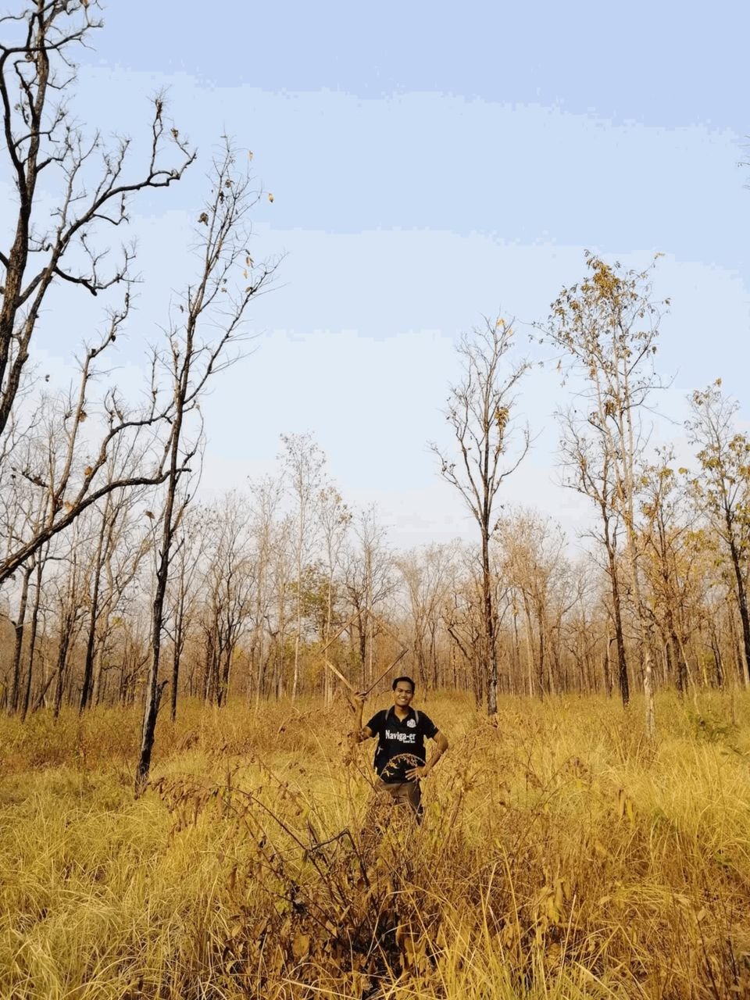
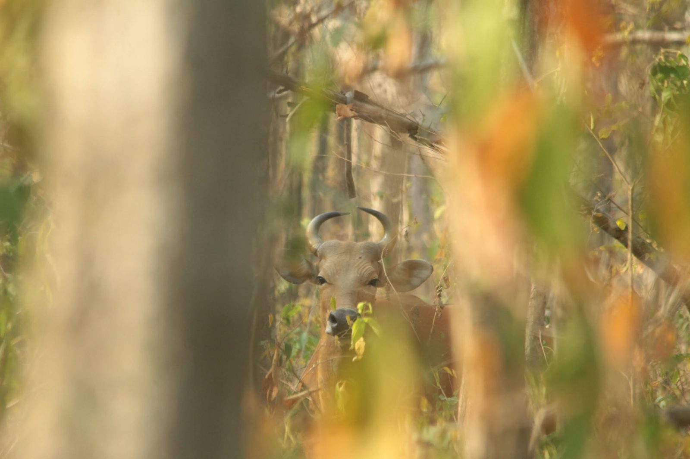

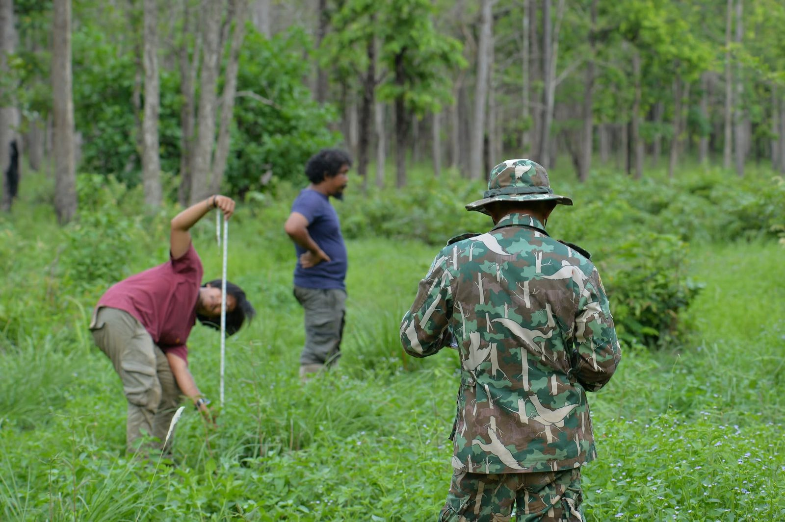
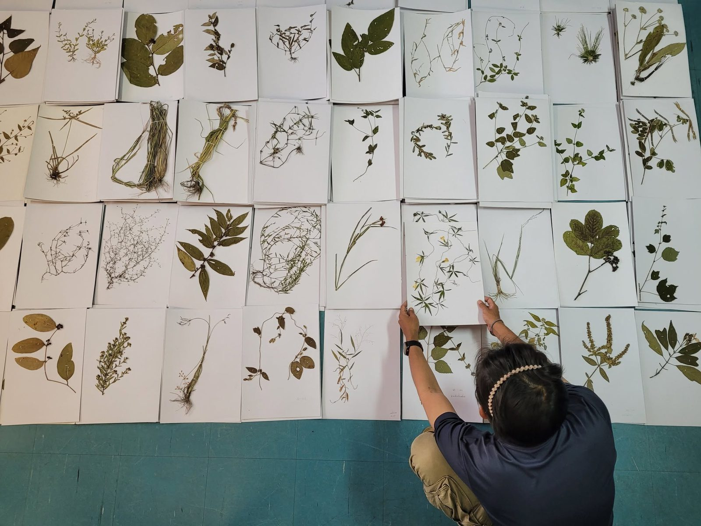
Dynamics of forage and management implications for large herbivore habitat in seasonally dry forest of Southeast Asia
02 — Field sites
Where I work


03 — Research projects
Ten years in the field
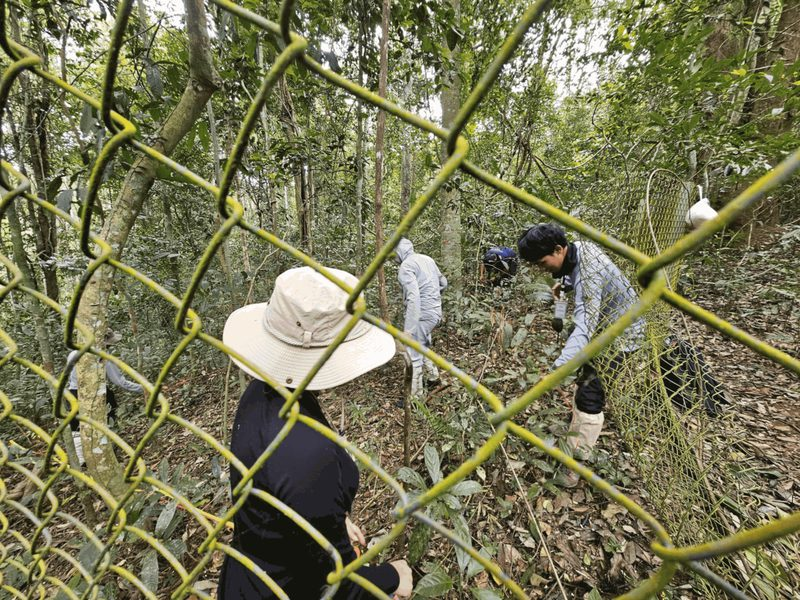
2024 – nowThailand's wild pig status after the African Swine Fever pandemic and its abundance impacts on plant communities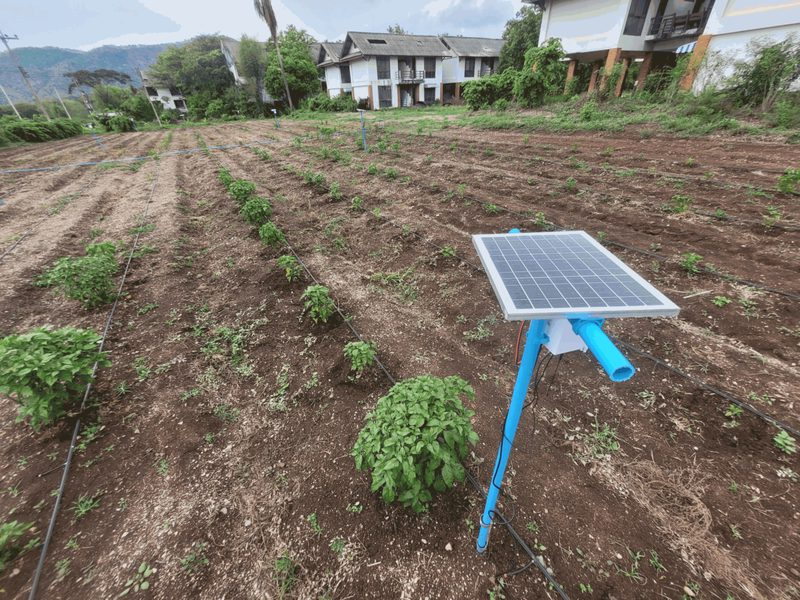
2023 – 2024Drought impact assessment on agricultural security in the Mae Chang watershed, Lampang (Year 2)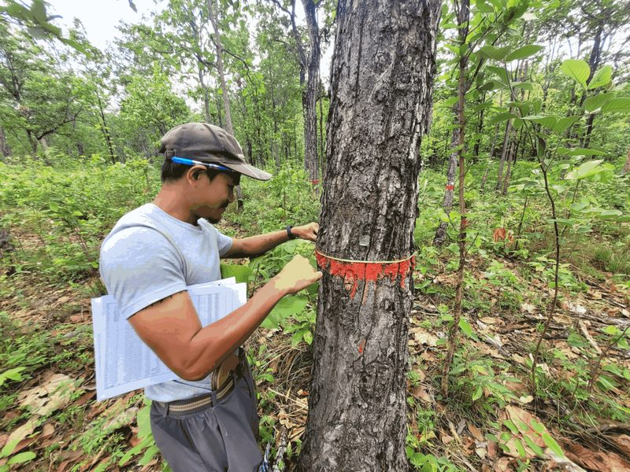
2022 – 2025Forest stand management and experiments for ecosystem preservation in protected forests of Thailand (Phase 1)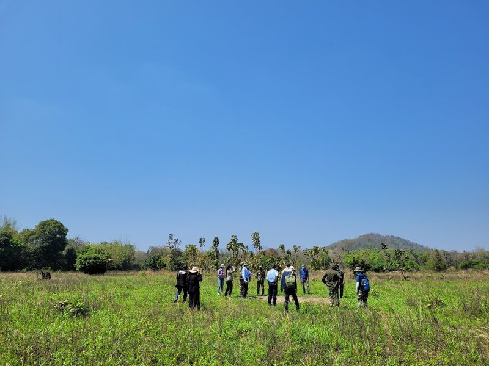
2021 – 2023Developing government policy for buffer-zone management at Huai Thap Salao–Huai Rabam Non-Hunting Area, Uthai Thani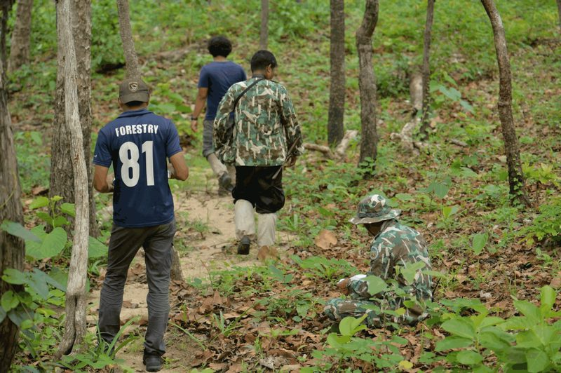
2020 – 2021Wildlife habitat management for large herbivores: developing wildlife food plots in the buffer area of Huai Kha Khaeng World Heritage Site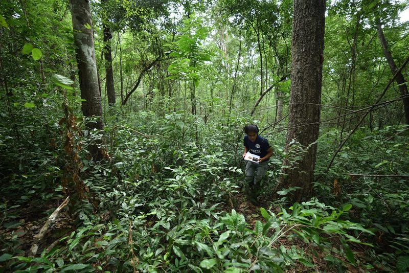
2018 – 2020Wildlife-based ecotourism for habitat and buffer-zone management in the Western Forest Complex (TIGER Project)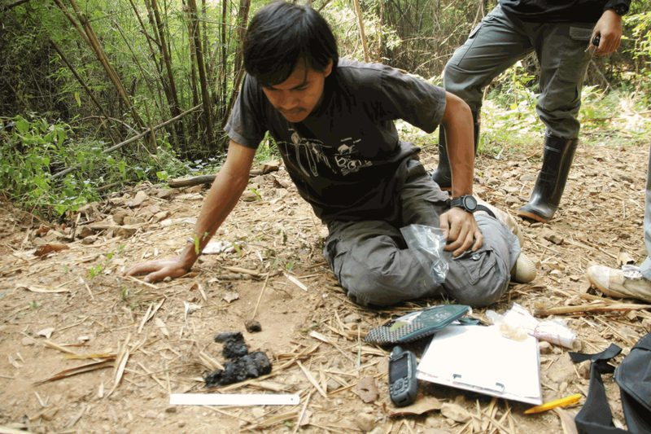
2016 – 2017Dholes Research Project in Thailand
04 — Publications
Peer-reviewed articles
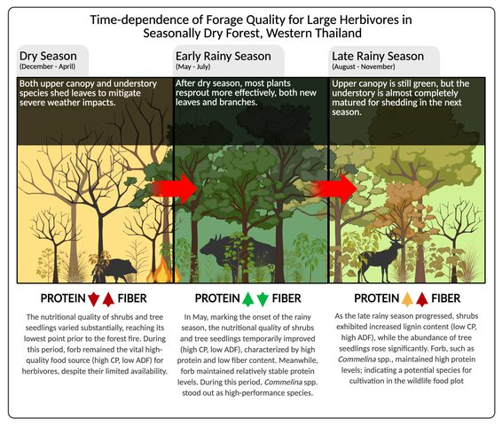
2026Chankhao, A., Kongmun, P., Kraichak, E., Phumsathan, S., & Pongpattananurak, N. Time-dependence of forage quality for large herbivores in seasonally dry tropical forests, western Thailand. Journal of Wildlife Management, 90(1), e70135.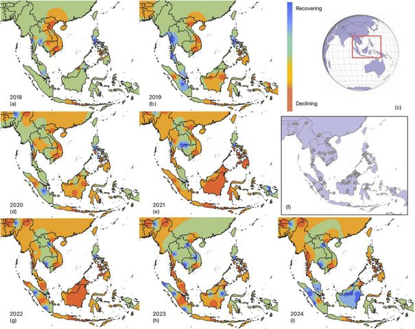
2025Lieb, Z. E., Meijaard, E., … Chankhao, A., … Luskin, M. S. Mapping multiple wild pig species' population dynamics in Southeast Asia during the African Swine Fever outbreak (2018–2024). Conservation Letters, 18(3), e13105.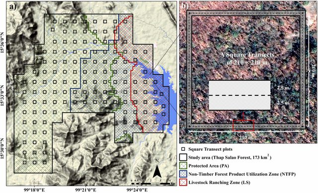
2024Phumsathan, S., Thongwichit, K., Simcharoen, A., Suksavate, W., Kraichak, E., Chankhao, A., & Pongpattananurak, N. Factors affecting habitat use of Asian elephants for the buffer zone management and conservation of Huai Kha Khaeng World Heritage Site, Thailand. Global Ecology and Conservation, 56, e03302.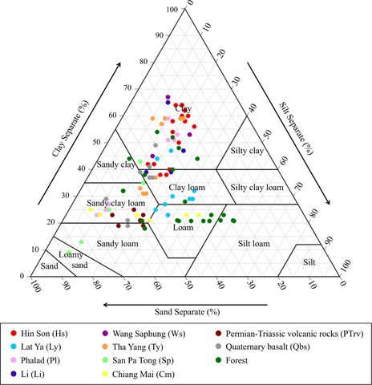
2024Sattraburut, T., Yuttitham, M., Vongvassana, S., Pattanakiat, S., Chankhao, A., & Prueksakorn, K. Rapid decline in soil organic carbon stocks following forest-to-maize field conversion within a watershed in northern Thailand. Environmental Challenges, 17, 101042.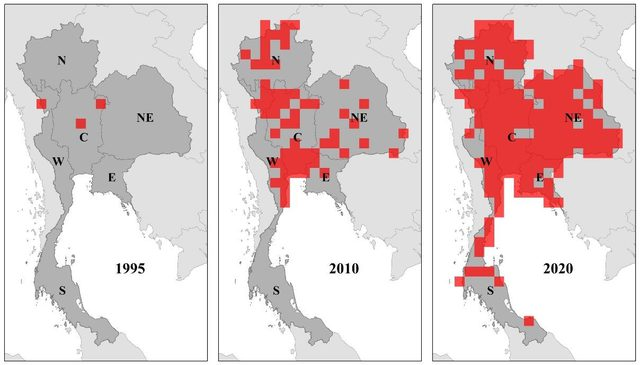
2024Chankhao, A., Nakmuenwai, P., Pattanakiat, S., Vongvassana, S., Suksavate, W., Kongsila, T., & Duengkae, P. House sparrow Passer domesticus as an invasive bird in Thailand: Natural dispersion or introduced species? Ecologica Montenegrina, 80, 94–105.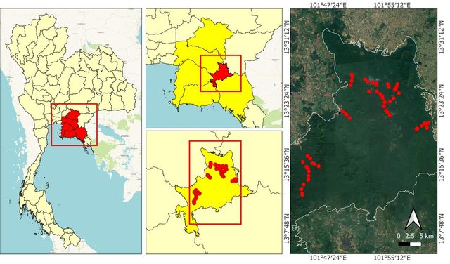
2023Sukmasuang, R., Chaisomboon, P., Paansri, P., Trisurat, Y., Kanka, P., Khiowsree, N., Kaewdee, B., Siripattanukul, K., & Chankhao, A. Abundance and factors affecting the appearance of Siamese fireback and red junglefowl in the lowland forest of Thailand. Biodiversitas, 24(10), 5718–5730.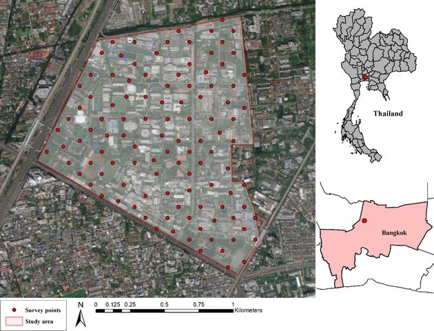
2023Chankhao, A., Meevanasukkul, P., Dumrongtawat, N., Bhumpakphan, N., Sukmasuang, R., Chimchome, V., Suksavate, W., Sutummawong, N., Pongcharoen, C., Nakmuenwai, P., & Duengkae, P. Correlation between resident birds and anthropogenic noise and particulate matter: A case study at Kasetsart University, Bangkok, Thailand. Agriculture and Natural Resources, 57, 11–20.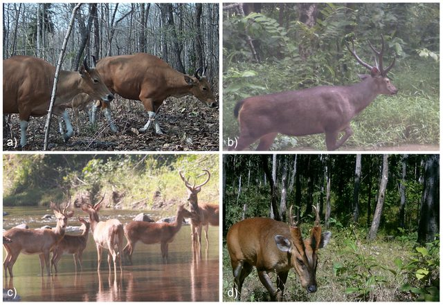
2022Chankhao, A., Kraichak, E., Phumsathan, S., & Pongpattananurak, N. Dynamics of forage and management implications for large herbivore habitat in seasonally dry forest of Southeast Asia. Forests, 13, 1463. doi.org/10.3390/f13091463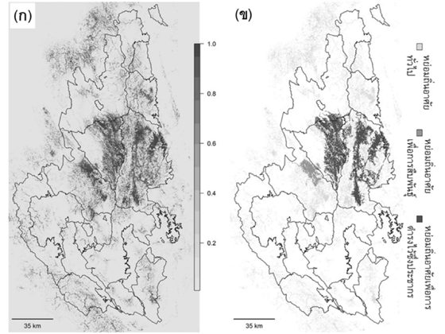
2020Ariyaphithak, C., Pongpattananurak, N., Pattanavibool, A., Podchong, S., & Chankhao, A. Applying SMART patrol database for creating species distribution model of Panthera tigris corbetti in Western Forest Complex, Thailand. Journal of Environmental Management, 16(2), 42–59. (In Thai) doi.org/10.14456/jem.2020.10
Figures are reproduced from each article under its licence, © the authors and publishers. Citation counts are live from OpenAlex.
Oral presentations
- 2023 · BangkokDeveloping the Thai birds status monitoring systems from the eBird database through Google Earth Engine. 42nd Thailand Wildlife Seminar.
- 2023 · Pathum ThaniApplication of Google Earth Engine to find water shortage areas for wildlife management in Huai Kha Khaeng Wildlife Sanctuary. 15th Zoo Animal Conference.
- 2021 · PhraeEffect of crude protein on foraging preference of herbivores in seasonal forest, Huai Kha Khaeng Wildlife Sanctuary. 10th Thai Forest Ecological Research Network Conference. (In Thai)
- 2019 · LampangAbundance and habitat use of Asiatic jackal (Canis aureus) in Huai Kha Khaeng Wildlife Sanctuary. Forest Conference 2019. (In Thai)
05 — Teaching

Assistant Lecturer, Faculty of Environment and Resource Studies, Mahidol University (since July 2023).
- Statistical Analysis for Forest Biological Research Using Computer Programs
- Quantitative Forest Ecology (M.S.)
- Principles of Wildlife Habitat Management and Planning
- Field Wildlife Management
- Geo-Informatics Technology for Resource and Environmental Survey and Mapping
- Geo-Informatics for Natural Resource Management
- Plant Taxonomy
- Biogeography
- Quantitative Data Analysis for Environmental Science (training)
06 — Education
- 2024 – now
Ph.D. in Forestry, Wildlife Biology and Management
Department of Forest Biology, Kasetsart University
- 2020 – 2022
M.S. in Forest Biological Science, Wildlife Biology and Management
Kasetsart University · Graduate School Fellowship
- 2015 – 2019
B.S. in Forestry, Wildlife and Range Management
Kasetsart University
Certificates
- Unmanned Aircraft Pilot Certificate (up to 25 kg), valid to 2027
- Acoustic Technologies to Combat Conservation Crime & Biodiversity Loss — Colorado State University & Kasetsart University, 2025
Let's talk forests, forage and remote sensing.
Open to collaboration, fieldwork and conversations in Thai or English.
© 2026 Andaman Chankhao